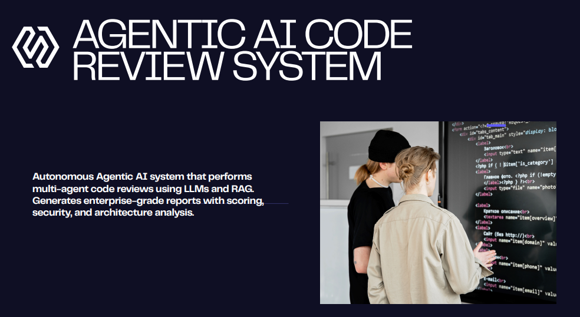
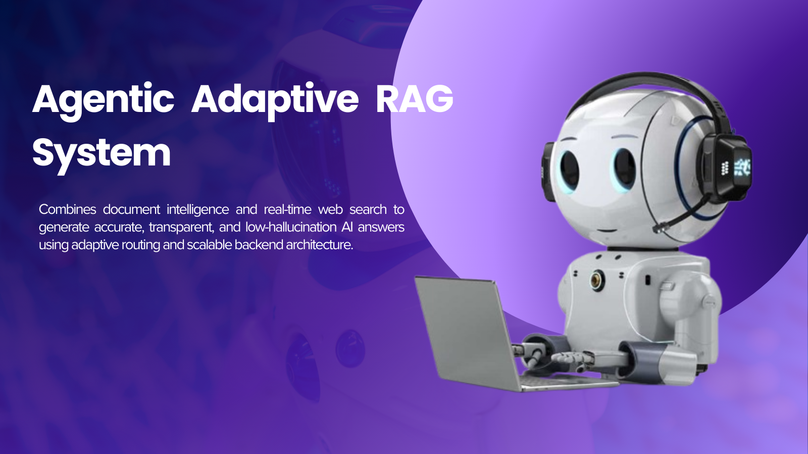
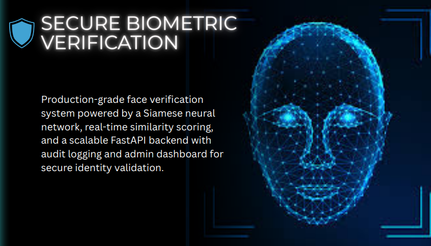

AI Engineer specializing in Agentic AI and Retrieval-Augmented Generation (RAG). I build multi-agent systems that reduce hallucinations, improve retrieval accuracy, and scale intelligent AI pipelines for real-world applications.
I design and build intelligent AI systems using multi-agent architectures, retrieval-augmented generation, structured LLM outputs, and memory-backed reasoning. My focus is on reducing hallucinations, improving Recall@K, and building production-grade AI pipelines.
MS in Artificial Intelligence – Air University, Islamabad
Specialized in intelligent systems, embeddings, information retrieval, and scalable AI application development.
Multi-agent orchestration, tool-augmented agents, memory-backed reasoning, structured LLM outputs.
FAISS, dense embeddings, semantic chunking, Recall@K optimization, hallucination reduction.
Prompt engineering, output validation, retrieval-enhanced generation, grounding.
High-performance APIs, async endpoints, AI microservices, authentication pipelines.
AI pipelines, embeddings, vector search, automation, ML workflows.
FAISS indexing, similarity search, low-latency retrieval pipelines.

Built a multi-agent AI system to analyze 1,000+ repositories, reducing processing time by ~60% and improving detection recall by ~30% using RAG and structured LLM outputs.

Built a scalable RAG pipeline indexing 10,000+ documents with FAISS, improving Recall@K by ~35% and reducing hallucinations by ~40%.

Developed a real-time face verification system using TensorFlow, FaceNet, and FastAPI with 94%+ accuracy.